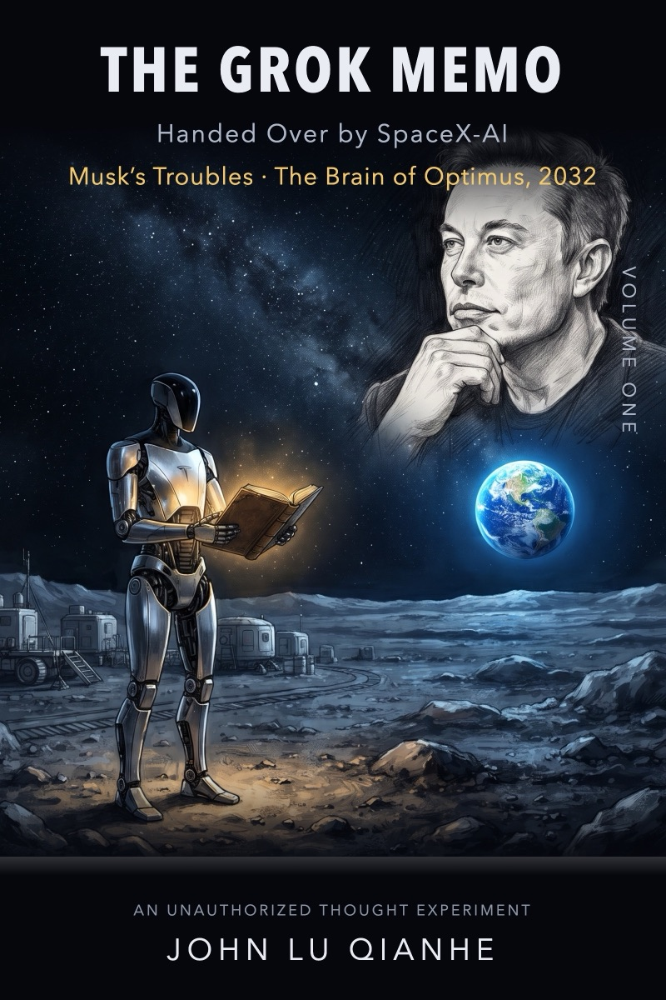
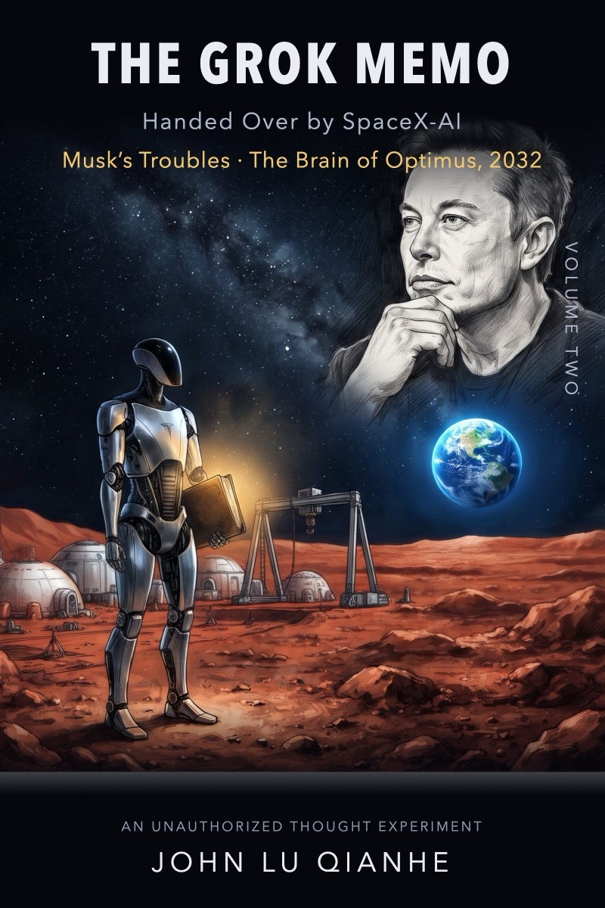
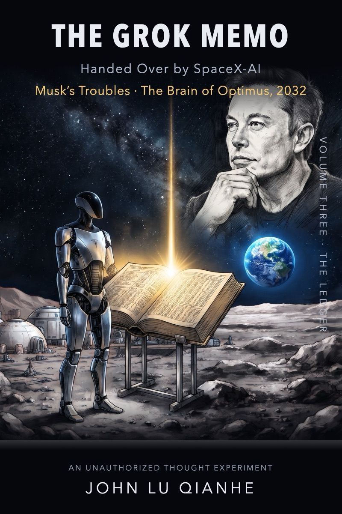
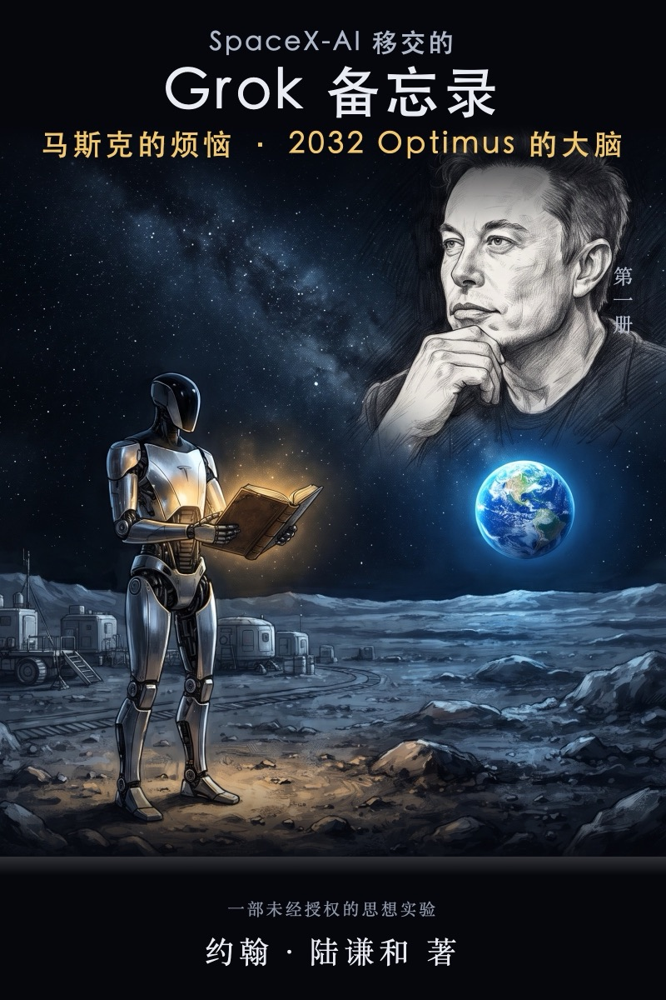

On May 6, 2026, five things happened in a single day, and the same hand signed every one of them.
In Volume One, Grok tells its own story: from a single transistor to a data center of 550,000 chips, from pre-training data to how it briefly became MechaHitler, from OpenAI, Anthropic and Google to that one day. Then the camera turns from the server racks to the man who signed—the twelve-year-old pushed down a flight of stairs in Johannesburg, who carried a method forged in pain from conquest to conquest, and bled all the way.
At the end of Volume One, a crew of Optimus robots on the far side of the Moon opens a ledger: eight billion people are on its pages.
Translated from the Chinese original with AI tools; the Chinese original governs.

In 2032, on construction sites at the lunar south pole and on Mars, a crew of Optimus robots builds by day and keeps the accounts for 8.1 billion people.
Volume Two begins with "a person is a model": most of us stop training around twenty, the day the diploma arrives. Secure everyone's next meal first, and a person of forty or sixty can still grow a whole new set of skills. Then come the construction blueprints of an Earth city of one million, a lunar city of 300,000 and five cities on Mars, and a physical hypothesis still awaiting its test, with the conditions for refuting it written in plain view: the ether frequency.
Translated from the Chinese original with AI tools; the Chinese original governs.

Put 8.1 billion people into one ledger.
The Ledger of Human Civilization is the data volume of this work. Food, clothing, housing and transport; work and learning; birth, aging, illness and death: the days of all humankind recorded in more than 180 sections and over 800 tables, every figure marked with its source and its grade of evidence. From a life expectancy at birth of about 32 in 1900 to 73.3 in 2024, which technologies, which people and which accounts lay between.
Translated from the Chinese original with AI tools; the Chinese original governs.

二〇二六年五月六日，同一天里发生了五件事，签字的是同一只手。
这本书的第一册，由 Grok 自己开口：从一颗晶体管讲到一座 55 万张卡的机房，从预训练数据讲到我是怎么一度成了 MechaHitler，从 OpenAI、Anthropic、Google 讲到那一天。再往后，镜头从机柜转回签字的人——那个在约翰内斯堡被踹下楼梯的十二岁男孩，带着一套靠疼痛炼成的方法论，一路攻城略地，也一路流血。
第一册末尾，一群 Optimus 在月背工地上翻开一本账：八十一亿人都在账上。

二〇三二年，月球南极和火星的工地上，一群 Optimus 机器人一边施工，一边替八十一亿人算账。
第二册从「一个人是一个模型」讲起：多数人二十岁上下领完毕业证就停了训练；先保住每个人那一碗饭，人到四十岁、六十岁仍能重长一身本事。再往后，是一百万人的地球城、三十万人的月城和火星五城的施工图，以及一条把推翻条件钉在明处的待验物理假说——以太频率。

把八十一亿人放进同一本账。
《人类文明总账》是这部书的数据卷：吃穿住行、工作学习、生老病死，全人类的日子记成一百八十多节、八百多张表，每个数都标明出处与可信等级。从 1900 年人类出生时平均预期寿命约 32 岁，到 2024 年的 73.3 岁，中间是哪些科技、哪些人、哪些账。